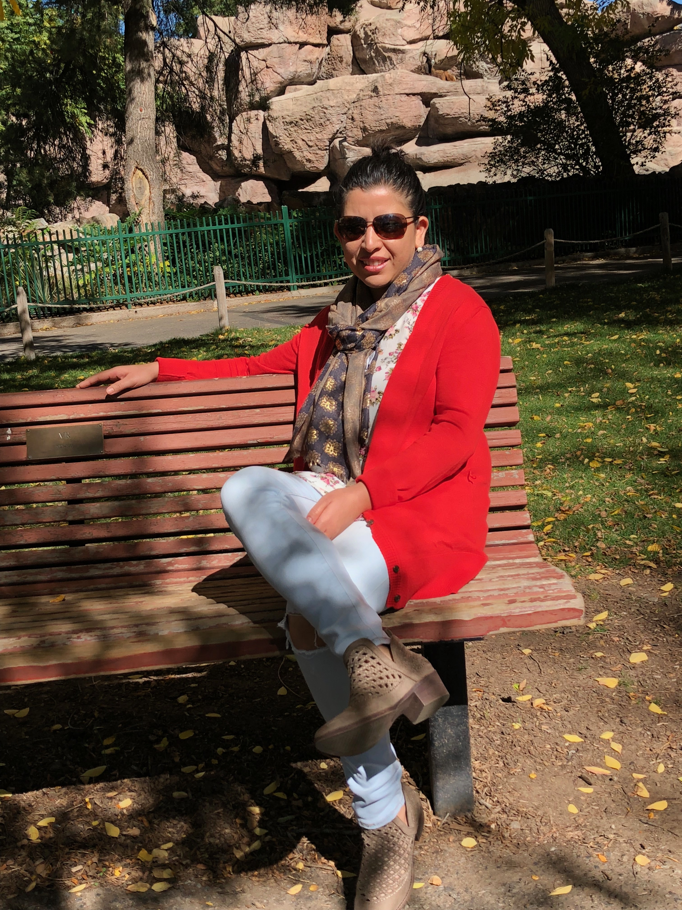

About Me
I graduated from Miami University in 2010 with a degree in Environmental Science and Technology. I started my career as an Environmental Scientist and moved on to the field of IT. I was working as QA Analyst till last december and I am currently enrolled in University of Denver. I am determined to be a Full Stack Developer.
I am a very outdoor person. I love hiking, biking, running, cycling etc. Out of those, hiking is my favorite one. I have started to hike fourteeners this summer with my husband and we did four fourteeners. I am looking forward to hike more next summer.
Connect with Me